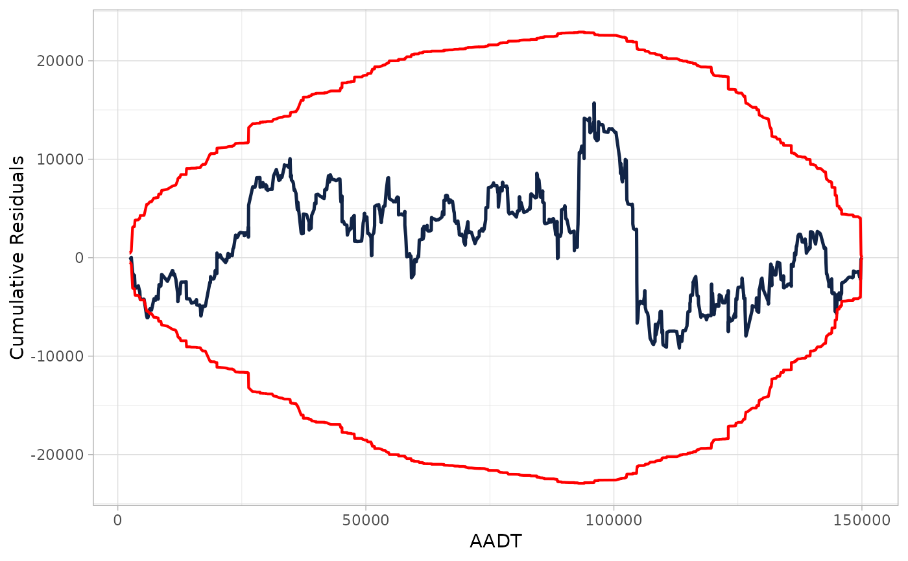
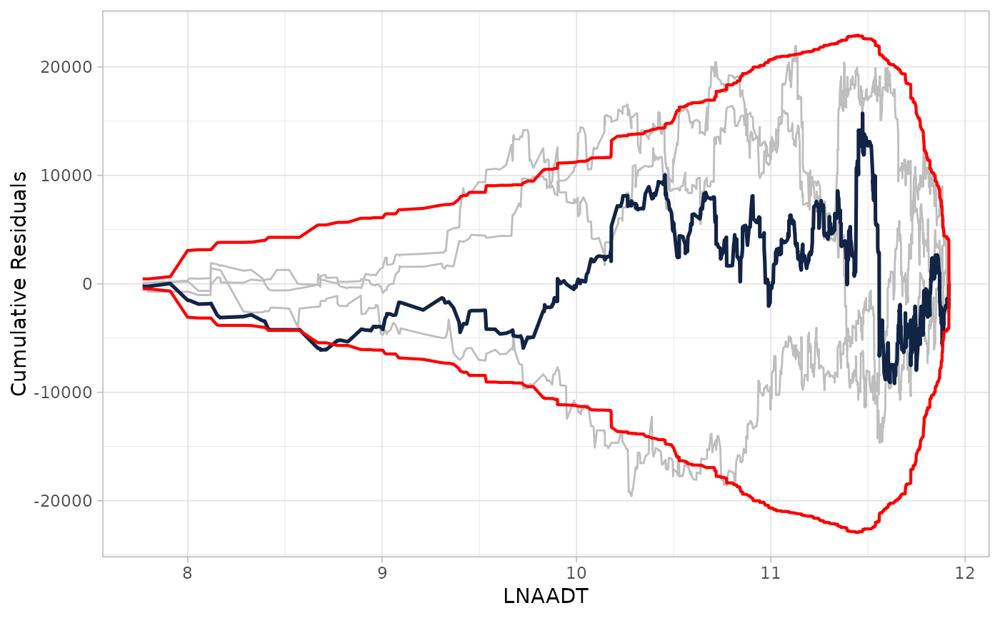

CURE Plot
Arguments
- x
Either a data frame produced with
calculate_cure_dataframe, in that case, the first column is used to produce CURE plot; or regression model for count data (e.g., Poisson) adjusted withglmorgam.- covariate
Required when
xis model fit.- n_resamples
Number of resamples to overlay on CURE plot. Zero is the default.
Examples
## basic example code
set.seed(2000)
## Define parameters
beta <- c(-1, 0.3, 3)
## Simulate independent variables
n <- 900
AADT <- c(runif(n, min = 2000, max = 150000))
nlanes <- sample(x = c(2, 3, 4), size = n, replace = TRUE)
LNAADT <- log(AADT)
## Simulate dependent variable
theta <- exp(beta[1] + beta[2] * LNAADT + beta[3] * nlanes)
y <- rpois(n, theta)
## Fit model
mod <- glm(y ~ LNAADT + nlanes, family = poisson)
## Calculate residuals
res <- residuals(mod, type = "working")
## Calculate CURE plot data
cure_df <- calculate_cure_dataframe(AADT, res)
#> Covariate: AADT
head(cure_df)
#> # A tibble: 6 × 5
#> AADT residual cumres lower upper
#> <dbl> <dbl> <dbl> <dbl> <dbl>
#> 1 2363. -0.000379 -0.000379 -0.000743 0.000743
#> 2 2435. 0.0112 0.0108 -0.0219 0.0219
#> 3 2724. 0.00769 0.0185 -0.0266 0.0266
#> 4 2978. -0.00233 0.0162 -0.0270 0.0270
#> 5 3007. -0.0119 0.00424 -0.0356 0.0356
#> 6 3149. -0.0101 -0.00589 -0.0407 0.0407
## Providing CURE data frame
cure_plot(cure_df)
#> CURE data frame was provided. Its first column, AADT, will be used.

## Providing glm object
cure_plot(mod, "LNAADT")
#> Covariate LNAADT will be used to produce CURE plot.
## Providing glm object adding resamples cumulative residuals
cure_plot(mod, "LNAADT", n_resamples = 3)
#> Covariate LNAADT will be used to produce CURE plot.
